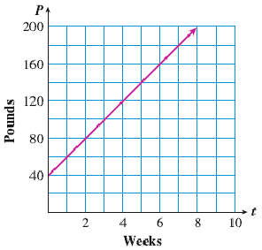

Subsection 6.3.1 Equations Relating Proportional Variables
Our definition from
Section 6.2 says that two variables are proportional if the ratio of their values is constant. If we use
\(x\) and
\(y\) to stand for the variables, we can write the definition in mathematical language.
Proportional Variables, Version 1.
The variables \(y\) and \(x\) are proportional if \(~\dfrac{y}{x} = k~\text{,}\) where \(k\) is a constant.
Notice how the algebraic equation captures the English description: "the ratio of the values" is \(~\dfrac{y}{x}~\text{,}\) and "is constant" is denoted by \(~ = k~\text{,}\) where \(k\) is a constant.
There is nothing special about the letters \(x\) and \(y\) used for the variables. In the next Example we use \(p\) and \(q\text{.}\)
Example 6.3.1.
Here are some values of the two variables \(p\) and \(q\text{.}\) Is \(q\) proportional to \(p\text{?}\)
| \(~~\vphantom{\dfrac{1}{2}} p~~\) |
8 |
20 |
28 |
52 |
| \(\vphantom{\dfrac{1}{2}} q\) |
2 |
5 |
7 |
13 |
Solution.
We will check to see whether the ratio \(\dfrac{q}{p}\) is constant.
| \(~~\vphantom{\dfrac{1}{2}} p~~\) |
8 |
20 |
28 |
52 |
| \(\vphantom{\dfrac{1}{2}} q\) |
2 |
5 |
7 |
13 |
| \(\vphantom{\dfrac{1}{2}} \dfrac{q}{p}\) |
\(\dfrac{2}{8} = 0.25\) |
\(\dfrac{5}{20} = 0.25\) |
\(\dfrac{7}{28} = 0.25\) |
\(\dfrac{13}{52} = 0.25\) |
Yes, \(\dfrac{q}{p} = 0.25\text{,}\) so \(q\) is proportional to \(p\text{.}\)
Checkpoint 6.3.3.
Is \(z\) proportional to \(w\text{?}\)
| \(~~\vphantom{\dfrac{1}{2}} w~~\) |
2 |
4 |
6 |
8 |
| \(\vphantom{\dfrac{1}{2}} z\) |
8 |
12 |
16 |
20 |
| \(\vphantom{\dfrac{1}{2}} \dfrac{z}{w}\) |
\(\hphantom{0000}\) |
\(\hphantom{0000}\) |
\(\hphantom{0000}\) |
\(\hphantom{0000}\) |
In Example 6.3.1 above, we found that the value of \(k\) was 0.25. This number is called the constant of proportionality. You can check that for each value of \(p\text{,}\) we have
\begin{equation*}
q = 0.25 \times p
\end{equation*}
This observation gives us another way to describe proportional variables.
Proportional Variables, Version 2.
If \(y\) is proportional to \(x\text{,}\) then
\begin{equation*}
y = k \times x
\end{equation*}
where \(k\) is a constant.
Because multiplication and division are opposite operations, the two equations
\begin{equation*}
\dfrac{y}{x} = k ~~~~~~ \text{and} ~~~~~~ y = k \times x
\end{equation*}
are two ways to say the same thing. This second version says that \(y\) is proportional to \(x\) if \(y\) is a constant multiple of \(x\text{.}\)
Example 6.3.5.
The distance, \(d\text{,}\) that you drive on the highway is proportional to the amount, \(g\text{,}\) of gasoline that you use. Myrna used 6 gallons of gas to drive 159 miles.
Find the constant of proportionality and write an equation relating the variables.
How far can Myrna drive on a full 22-gallon tank of gas?
Solution.
Because \(d\) is proportional to \(g\text{,}\) we can write the equation
\begin{equation*}
d = kg ~~~~~~ \text{or} ~~~~~~ k = \dfrac{d}{g}
\end{equation*}
where \(k\) is the constant of proportionality. We find the value of \(k\) by using one pair of related values for the variables.
\begin{equation*}
\dfrac{d}{g} = \dfrac{159~ \text{miles}}{6~ \text{gallons}} = 26.5 ~\text{miles per gallon}
\end{equation*}
So \(k = 26.5\text{,}\) and an equation relating the two variables is
\begin{equation*}
d = 26.5g
\end{equation*}
If we now substitute \(\alert{22}\) for \(g\text{,}\) we can compute the related value of \(d\text{.}\)
\begin{equation*}
d = 26.5g = 26.5 \times \alert{22} = 583
\end{equation*}
Myrna can drive 583 miles on 22 gallons of gas.
Example 6.3.4 demonstrates that the constant of proportionality, \(k\text{,}\) is just the unit rate we used in Section 6.1. By simplifying the ratio \(\dfrac{d}{g}\) for a specific pair of values, we found the distance that Myrna can drive on one gallon of gas, the unit rate for the proportion.
Checkpoint 6.3.6.
The number of calories, \(C\text{,}\) in a bar of chocolate is proportional to its weight, \(w\text{.}\) A four-ounce bar of dark chocolate contains 600 calories.
Find the constant of proportionality, and express it as a rate, using appropriate units.
Use your constant to write an equation that gives the number of calories, \(C\text{,}\) in a chocolate bar in terms of its weight, \(w\text{.}\)
How much chocolate can you eat for 200 calories?
How many calories are in one-half ounce of chocolate?
Answer.
\(k = 150\) calories per ounce
\(\displaystyle C = 150w\)
\(1 \frac{1}{3}\) ounces
75 calories
Subsection 6.3.2 Steepness of the Graph
Now that we have seen how to write an equation relating proportional variables, let’s take a closer look at the graphs of those equations. In
Section 6.2 we made graphs for the proportional variables in the following story:
Before handing in big assignments such as term papers or lab reports, Delbert and Francine make copies of them. Delbert uses QuikCopy, and keeps track of the copying fee for each assignment. Francine copies her assignments at Copy World.
|
\(\vphantom{\dfrac{1}{2}}\)Number of pages |
14 |
27 |
35 |
|
\(\vphantom{\dfrac{1}{2}}\)Cost (cents) |
112 |
216 |
280 |
|
\(\vphantom{\dfrac{1}{2}}\)Number of pages |
12 |
26 |
32 |
|
\(\vphantom{\dfrac{1}{2}}\)Cost (cents) |
72 |
156 |
192 |
We can write an equation for each of the variables, \(D\text{,}\) Delbert’s copying fees, and \(F\text{,}\) Francine’s copying fees, in terms of the number of pages copied, \(p\text{.}\) We’ll calculate the unit cost in each case.
Delbert’s unit cost for copying is
\begin{equation*}
\dfrac{112 ~\text{cents}}{14 ~\text{pages}} = 8 ~\text{cents per page}
\end{equation*}
and this is the constant of proportionality, \(k\text{,}\) for his equation:
\begin{equation*}
D = 8p
\end{equation*}
Francine’s unit cost for copying is
\begin{equation*}
\dfrac{72 ~\text{cents}}{12 ~\text{pages}} = 6 ~\text{cents per page}
\end{equation*}
so \(k = 6\text{,}\) for her equation:
\begin{equation*}
F= 6p
\end{equation*}
We can think of the unit cost as the rate of increase in copying fees as the number of pages copied increases. Delbert’s cost increases by 8 cents for each page copied. Francine’s cost increases by 6 cents for each page copied. How is the rate of increase reflected in the graph?
Steepness of the Graph.
The unit cost in each case is a ratio that measures the steepness of the graph. It tells us how much to increase the output variable per unit of increase in the input variable, that is, each time the input variable increases by 1.
For example, for each additional page Delbert has copied, his cost will increase by 8 cents, and the graph will climb 8 units for each unit we move to the right. And because his cost is increasing more rapidly than Francine’s, the graph of Delbert’s cost is steeper than the graph of Francine’s cost.
Subsection 6.3.3 Rate of Increase
In the copying fee example, we interpreted the constant of proportionality or unit rate as a rate of increase. It tells us how quickly the output variable increases with respect to the input variable, and hence how steeply the graph of the equation rises.
The notion of rate of increase can be applied to other equations besides proportions. Recall that the graph of a proportion is a straight line that passes through the point \((0,0)\text{.}\) But as long as the graph is a straight line, we can still talk about its rate of increase, even if it does not pass through the point \((0,0)\text{.}\) In Example 6.3.6 we’ll compare the rate of growth of two strains of tomato plants.
Example 6.3.7.
Sara bought two kinds of tomato plants at the nursery. The Spring Giant seedlings were 2 inches tall, and the Jubilee seedlings were 16 inches tall. Sara recorded the height, \(h\text{,}\) of the vines every two weeks, as shown in the tables below. Then she plotted their heights on a graph. Which variety grew more quickly?
Solution.
From the graph below, we can see that the Spring Giant tomato vines are growing faster than the Jubilee vines, because their graph increases more steeply. The steepness of the graph is a measure of how fast the vines grow.
To see exactly how fast the vines grow, we compute their rate of growth. The variables \(t\) and \(h\) are not proportional, so we cannot use a constant of proportionality to measure their growth.
But we can see from the table that during the first two weeks, the Spring Giant vines grew 8 inches (from 2 inches to 10 inches), so their growth rate was
\begin{equation*}
\dfrac{\text{8 inches}}{\text{2 weeks}} = \text{4 inches/week}
\end{equation*}
Similarly, the Jubilee vines grew 5 inches (from 16 inches to 21 inches), so their growth rate was
\begin{equation*}
\dfrac{\text{5 inches}}{\text{2 weeks}} = \text{2.5 inches/week}
\end{equation*}
So the Spring Giant vines grew faster than the Jubilee vines, as we saw from the graph.
In Checkpoint 6.3.7, we’ll compute some more growth rates. Use the tables in Example 6.3.6 about the Spring Giant and Jubilee tomato vines.
Checkpoint 6.3.8.
Compute the ratio
\begin{equation*}
\blert{\dfrac{\text{increase in height}}{\text{time interval}}}
\end{equation*}
to find each growth rate.
Find the growth rate of the Spring Giant tomato vines from the fourth week to the eighth week.
Find the growth rate of the Jubilee tomato vines over the first four weeks.
Find the growth rate of the Jubilee tomato vines from the fourth week to the eighth week.
Answer.
4 inches/week
2.5 inches/week
2.5 inches/week
Notice that the growth rate for each vine is the same over different time intervals, 4 inches/week for the Spring Giant and 2.5 inches/week for the Jubilee.
A Quick Refresher and Some New Notation.
To calculate the increase or decrease in a quantity, we can subtract the initial value from the final value. For example, over the first 2 weeks, the Jubilee tomato vines grew from 16 inches tall to 21 inches tall, so
\begin{align*}
\text{increase in height} \amp = \text{final value} - \text{initial value} \\
\amp = 21 - 16 = 5 ~\text{inches}
\end{align*}
-
We use the Greek letter delta, \(\Delta\), to stand for the change in a quantity. So, for example, \(\Delta h\) stands for the change in height of the vine, and we write
\begin{equation*}
\Delta h = 5~ \text{inches}
\end{equation*}
In general we have
\begin{align*}
\blert{\Delta x} \amp = \blert{~\text{change in value of }~x}\\
\amp = \blert{~\text{final value of }~x - \text{initial value of }~x}
\end{align*}
Subsection 6.3.4 Visualizing Growth Rate on a Graph
We can illustrate the growth rate of each tomato vine on its graph.
Example 6.3.9.
The graph below shows the height, \(h\text{,}\) of the Spring Giant tomato vine \(t\) weeks after Sara planted it. The vertical line segment labeled \(\Delta h\) represents the increase in the vine’s height from the second week to the sixth week. The horizontal line segment labeled \(\Delta t\) represents the time interval, 4 weeks.
From week 2 to week 6, the vine grew at a rate of
\begin{align*}
\dfrac{\Delta h}{\Delta t} \amp = \dfrac{\text{increase in height}}{\text{time interval}}\\
\amp = \dfrac{(26-10)~\text{inches}}{(6-2)~\text{weeks}}\\
\amp = \dfrac{\text{16 inches}}{\text{4 weeks}} = \text{4 inches/week}
\end{align*}
What does this ratio, 4 inches/week, tell us about the graph? Place your pencil tip at any point on the graph, then move one unit to the right along the grid lines. To get back to the graph, you must now move up by four units (two grid lines on this graph). The graph increases by climbing four units vertically for each unit we move horizontally.
Checkpoint 6.3.10.
The graph shows the height, \(h\text{,}\) of the Jubilee tomato vines \(t\) weeks after Sara planted them.
Start at any point on the graph. If you move four units horizontally, how many units does the graph climb vertically? If you move one unit horizontally, how many units does the graph climb vertically?
On the graph, draw and label line segments to illustrate the growth rate of the Jubilee tomato vines from the fourth week to the eighth week. Then calculate the growth rate.
\begin{equation*}
\dfrac{\Delta h}{\Delta t} =
\end{equation*}
Exercises 6.3.8 Practice 6-3
Exercise Group.
In Problems 1-6,
Decide whether the two variables are proportional.
If the variables are proportional, write an equation relating them.
1.
| \(~~ h~~\) |
3 |
6 |
8 |
12 |
| \(k\) |
9 |
18 |
24 |
36 |
2.
| \(~~ C~~\) |
1 |
3 |
6 |
12 |
| \(R\) |
15 |
35 |
65 |
125 |
3.
4.
5.
| 2 |
0.5 |
| 4 |
0.25 |
| 5 |
0.2 |
| 10 |
0.1 |
6.
Exercise Group.
In Problems 7-14, decide whether the graph or equation describes proportional variables.
7.
8.
9.
10.
11.
\(f = 5.8-d\)
12.
\(t = 1.4q\)
13.
\(S = \dfrac{13m}{7}\)
14.
\(L = 12v^2\)
15.
\(T\) is proportional to \(w\) if their is constant.
\(T\) is proportional to \(w\) if \(T\) is a of \(w\text{.}\)
16.
Write two different equations that say that \(R\) is proportional to \(h\text{.}\)
17.
What is a constant of proportionality?
How can you find it?
18.
If \(R\) is proportional to \(h\text{,}\) what can you say about the graph of \(R\) versus \(h\text{?}\)
19.
Trish’s real-estate commission is proportional to the amount of the sale. She made $3200 commission on a sale of $80,000.
Write an equation relating Trish’s commission, \(C\text{,}\) to her sales, \(S\text{.}\)
What would her commission be on the sale of a $200,000 property?
20.
Property taxes are proportional to the value of the property. Gwen paid $3000 in property tax on her summer home, which is valued at $120,000.
Write an equation relating the property tax, \(T\text{,}\)to the value of the property, \(V\text{.}\)
How much will Gareth pay on his cabin, which was assessed at $50,000?
21.
How do we calculate the amount of increase or decrease in a quantity?
22.
What does the Greek letter delta, \(\Delta\text{,}\) represent?
23.
State the definition of slope, in words, and then in symbols.
24.
What does the slope of a line measure?
25.
Lynette is saving money for the down payment on a new car. The graph shows the amount \(A\) she has saved \(w\) weeks after the first of the year.
How much has Lynette saved after 2 weeks?
When will Lynette have saved $700?
Compute the slope of the graph, \(\dfrac{\Delta A}{\Delta w}\text{,}\) including units.
What does the slope tell you about the problem?
26.
Joshua is saving newspapers for the paper drive at his son’s school. The graph shows the amount of newspaper \(P\) he has saved \(t\) weeks after the paper drive began.
How many pounds of newspaper has Joshua saved after 4 weeks?
When will Joshua have saved 180 pounds of newspapers?
Compute the slope of the graph, \(\dfrac{\Delta P}{\Delta t}\text{,}\) including units.
What does the slope tell you about the problem?

27.
Britney is raising a goat to show at the state fair. The graph shows the goat’s weight \(W\) when it was \(t\) months old.
How much did the goat’s weight increase from the second month to the fourth month? From the fourth month to the eighth month?
Compute the goat’s rate of growth, including units.
Illustrate the rate of growth, \(\dfrac{\Delta W}{\Delta t}\text{,}\) on the graph.
28.
Jason is raising a rabbit for the county fair. The graph shows the rabbit’s weight \(W\) when it was \(t\) weeks old.
How much did the rabbit’s weight increase from the fourth week to the twelfth week? From the second week to the eighth week?
When will Joshua have saved 180 pounds of newspapers?
Compute the rabbit’s rate of growth, including units.
Illustrate the rate of growth, \(\dfrac{\Delta W}{\Delta t}\text{,}\) on the graph.
29.
The graph shows the wholesale cost \(C\) of \(p\) pounds of dry-roasted peanuts.
What does the slope of this graph tell you about dry-roasted peanuts?
Compute the slope, including units.
If the Lone Star Barbecue increases its weekly order of peanuts from 100 to 120 pounds, how much will the cost increase?
30.
The graph shows the cost \(C\) in thousands of dollars for \(s\) thousand square feet of grass sod for a lawn.
What does the slope of this graph tell you about sod?
Compute the slope, including units.
The Huron Breeze golf course is considering expanding its proposed putting green from 12,000 square feet to 15,000 square feet. How much will the cost of the sod increase?
31.
The steepness of an incline, like a ramp or a staircase, can be measured by its slope.
Find the slope of the staircase shown if its height is 12 feet and the horizontal distance between the foot and the head of the staircase is 8 feet.
Would a staircase of slope \(\frac{5}{4}\) be steeper than the one pictured, or not as steep?
32.
Find the slope of the ramp pictured if its height is 4 feet and the horizontal distance from its base to its top is 10 feet.
Would a ramp of slope \(\frac{3}{5}\) be steeper than the one pictured, or not as steep?
33.
Suppose you know that the slope of a line is 25.
If you start at any point on the line and move 1 unit to the right, how many units must you move up to reach another point on the line?
How many units must you move up if you move 3 units to the right?
34.
Suppose you know that the slope of a line is 8.
If you start at any point on the line and move 1 unit to the right, how many units must you move up to reach another point on the line?
How many units must you move up if you move 4 units to the right?
35.
Suppose you know that the slope of a line is \(\frac{3}{4}\text{.}\)
If you start at any point on the line and move 4 units to the right, how many units must you move up to reach another point on the line?
How many units must you move up if you move 6 units to the right?
36.
Suppose you know that the slope of a line is \(\frac{3}{4}\text{.}\)
If you start at any point on the line and move 1 unit to the right, how many units must you move up to reach another point on the line?
How many units must you move up if you move 3 units to the right?
Exercise Group.
For Problems 37-40, sketch a line whose slope is given. Start your line at any point on the vertical axis.
37.
\(m = \dfrac{\Delta y}{\Delta x} = \dfrac{5}{1}\)
38.
\(m = \dfrac{\Delta y}{\Delta x} = \dfrac{15}{1}\)
39.
\(m = \dfrac{\Delta C}{\Delta r} = \dfrac{8}{3}\)
40.
\(m = \dfrac{\Delta d}{\Delta n} = \dfrac{5}{4}\)
Exercise Group.
Problems 41 and 42 involve lines with negative slopes.
41.
Roy is traveling home by train. The graph shows his distance \(d\) miles from home \(h\) hours after the train started.
Compute the slope of the graph, including units.
What does the slope tell you about Roy’s journey?
42.
Antoine is living off his savings while he goes to college this year. The graph shows the amount of Antoine’s savings, \(S\) dollars, left after \(t\) months.
Compute the slope of the graph, including units.
What does the slope tell you about Antoine’s savings?